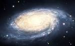
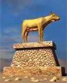

5 facts that prove scientist wrong about God.

Science has changed almost everything in the world.It has changed
the world in almost every angle including spirituality.The majority
of the science experts have denied the claim that they is a God,but
is it true,since science is based on facts we bring to you 5 facts that
prove scientist wrong about God and spirituality.
1 creation of life

According to various science sources they say humens were made
from dying stars,some say evolution also on the other hand the bible
says God created everything.Now assuming that the bible is
incorrect can we say we were made from dying stars or we evolved
,if it is the case so why did the evolution stop and why are we not
receiving babies from the sky
2 Bible
The bible is the most porpular book in his history.Having being
written by different prophets under the inspiration of God.No matter being
written by different prophets over centuries scientists have failed
to explain why it does not contradict it self.
3 Dreams
Everyone dreams,and according to science it is normal because
it is the duty of the brain.In Christianity it is the time when God
speaks to us.So what should we believe,In bible times dreams do
came true.Not just in the bible even now.Almost everyone as
had dreams that came true,but still science can not really explain
why.
4 Haunted places
The spirits of the dead can still have influence on us.God is a
spirit according to the bible.The physical gives birth to the
physical and spirit to spirit,thus according to the bible.Now
science is failing to explan where spirits originated.
5 Jesus
History has thoroughly confirmed that Jesus once was on earth.
What science is ailin to explain is
Related stories
5 Foods that are spiritual
5 spiritual foods that we
consume "almost" every-
day

the final truth about idol
worship
Mat 4:9 "All this I
will give you," he
said, "if you
will bow down and
worship me."
the truth about the dead
Ever wondered were thespirits of the dead ?
|
|
Feedback Advertise +263 712 098 125 |